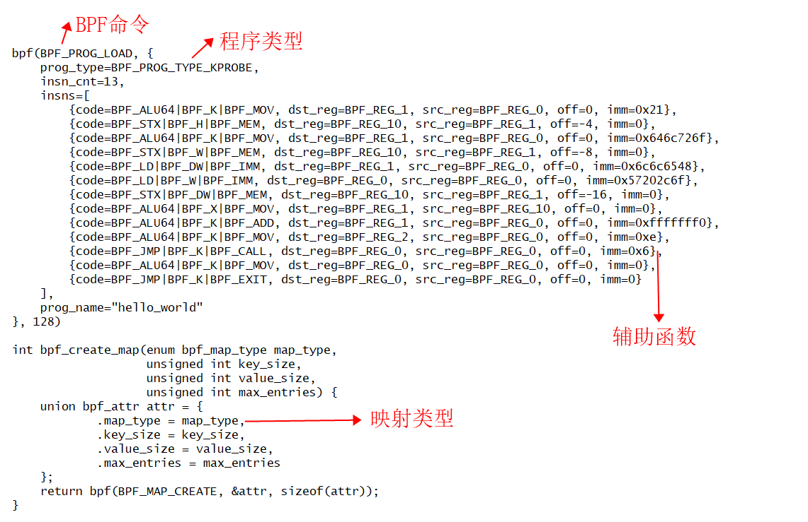
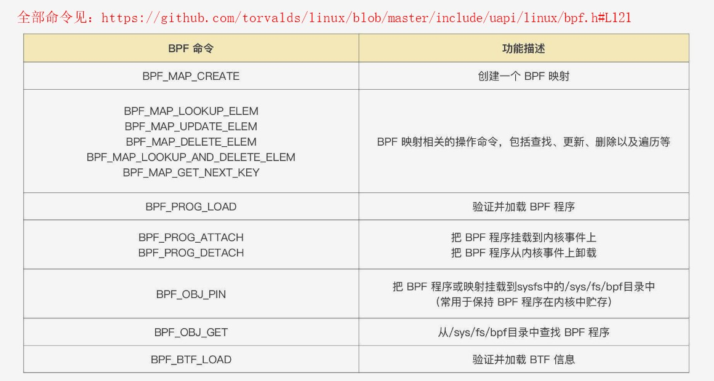
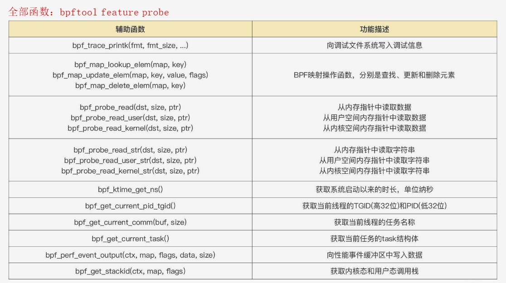
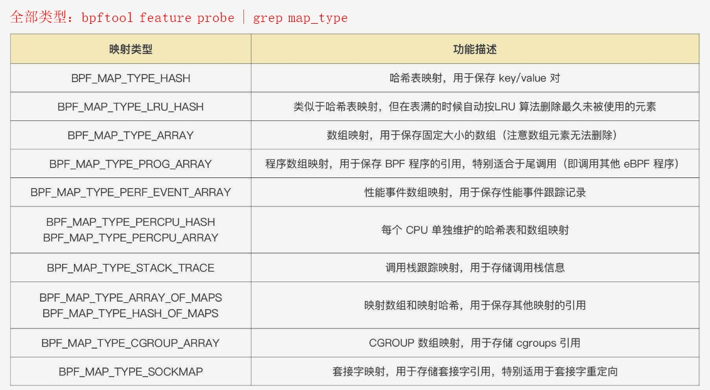

BPF之巅
参考资料
- BPF之巅
- bpftrace和Go语言
- BPF学习路径总结
- eBPF 与 Go 超能力组合
- IO Visor 项目开源的 BCC、 BPFTrace 和 Kubectl-Trace：
- BCC 提供了更高阶的抽象，可以让用户采用 Python、C++ 和 Lua 等高级语言快速开发 BPF 程序；
- BPFTrace 采用类似于 awk 语言快速编写 eBPF 程序；
- Kubectl-Trace 则提供了在 kubernetes 集群中使用 BPF 程序调试的方便操作；
- CloudFlare 公司开源的 eBPF Exporter 和 bpf-tools：
- eBPF Exporter 将 eBPF 技术与监控 Prometheus 紧密结合起来；
- bpf-tools 可用于网络问题分析和排查；
纯C写的bpf程序
1，在ubuntu 22.04安装环境
echo -e 'HostKeyAlgorithms ssh-rsa,ssh-dss\nPubkeyAcceptedKeyTypes ssh-rsa,ssh-dss' >> /etc/ssh/sshd_config
systemctl restart sshd
apt-get install -y make clang llvm libelf-dev libbpf-dev bpfcc-tools libbpfcc-dev linux-tools-$(uname -r) linux-headers-$(uname -r)
2，把下面c程序贬义词bpf指令程序：clang -I/usr/src/linux-aws-headers-5.15.0-1022/include -O2 -c -target bpf -o mybpfobject.o mybpfcode.bpf.c
#include <uapi/linux/bpf.h>
#include "bpf/bpf_helpers.h"
int bpf_prog(void *ctx) {
char buf[] = "Hello World!\n";
bpf_trace_printk(buf, sizeof(buf));
return 0;
}
（如果报错asm/types.h file not found则安装apt-get install -y gcc-multilib）
3，把bpf指令程序的纯指令提取出来：dd if=mybpfobject.o of=test_bpf bs=1 count=104 skip=64
4，用clang编译c程序：../bpf/test_bpf.c
5，运行a.out，它将捕获bpf的系统调用，如何查看：cat /sys/kernel/debug/tracing/trace_pipe

BPF命令

辅助函数

映射类型

程序类型
- 06 | 事件触发：各类 eBPF 程序的触发机制及其应用场景
- 全部类型：bpftool feature probe | grep program_type。可分为三类：
- 一，跟踪类，常用类型见表格
- 二，网络类
- 三，其他类，常用类型见表格
{kind=link}
{kind=link}
{kind=link}
{kind=link}
{kind=link}
内核跟踪
// 如果/sys/kernel/debug目录不存在，执行
sudo mount -t debugfs debugfs /sys/kernel/debug
// 查看可kprobe跟踪的内核函数
cat /sys/kernel/debug/tracing/available_filter_functions | wc -l
bpftrace -l 'kprobe:*' | wc -l
// 查看tracepoint可跟踪的syscall函数
cat /sys/kernel/debug/tracing/available_events |grep syscalls:|wc -l
bpftrace -l 'tracepoint:syscalls:*' | wc -l
// 查看系统调用execeve的传参
cat /sys/kernel/debug/tracing/events/syscalls/sys_enter_execve/format // 不推荐
bpftrace -lv tracepoint:syscalls:sys_enter_execve
// 查看系统调用execeve的返回值
cat /sys/kernel/debug/tracing/events/syscalls/sys_exit_execve/format // 不推荐
bpftrace -lv tracepoint:syscalls:sys_exit_execve
开发BPF程序的三种方式：
bpftrace：依赖BCC
BCC：依赖LLVM和内核头文件
libbpf：要求内核>=5.2，并开启BTF特性(RHEL 8.2+和Ubuntu 20.10+)，是否有/sys/kernel/btf/vmlinux
// 查询调用execve的进程id和名称，以及传参argv
bpftrace -e 'tracepoint:syscalls:sys_enter_execve,tracepoint: { printf("%-6d %-8s", pid, comm); join(args->argv);}'
如何开发一个负载均衡器
// 将两个 eBPF 程序和映射加载到内核中，并固定到 BPF 文件系统中。
// 固定到 BPF 文件系统的好处是，即便 bpftool 命令已经执行结束，eBPF 程序还会继续在内核中运行。
bpftool prog load sockops.bpf.o /sys/fs/bpf/sockops type sockops pinmaps /sys/fs/bpf
bpftool prog load sockredir.bpf.o /sys/fs/bpf/sockredir type sk_msg map name sock_ops_map pinned /sys/fs/bpf/sock_ops_map
// 把 sockops 程序挂载到 cgroups
bpftool cgroup attach /sys/fs/cgroup/ sock_ops pinned /sys/fs/bpf/sockops
bpftool prog attach pinned /sys/fs/bpf/sockredir msg_verdict pinned /sys/fs/bpf/sock_ops_map
sockops 程序类型是 sock_ops；sockredir 程序类型是 sk_msg
sockops 挂载类型是 cgroup； sockredir 挂载类型是 msg_verdict
追踪go程序的调用栈
// 例如需要追踪net.Listen("tcp", ":6380")的调用栈，假设执行文件是test
// 下面的命令会显示net.socket的上游调用链，它的上游有net.Listen
bpftrace -e 'uprobe:./test:net.socket {printf("%s\n", ustack); }' -c ./test
// 如果调用栈只显示了内存地址，则可以用addr2line转换
bpftrace -e 'uprobe:./test:net.socket {printf("%s\n", ustack); }' -c ./test | addr2line -e ./test -f -p
BPF之巅的学习
1. BPF的前端
Linux4.15后可以通过bpftool来查看和操作BPF对象
Linux4.17以后BCC和bpftrace都会使用perf_event_open()进行BPF程序的挂载
2. BPF的辅助函数
bpf_probe_read() 用于访问BPF之外的内存空间, 这个函数会进行安全检查并且禁止缺页中断的发生以保证probe上文中不会引发内核错误
x86上内核空间和用户空间没有重叠, 故通过地址读取不会存在问题. 而在SPARC上, 则必须通过bpf_probe_read_kernel()和bpf_probe_read_user()来区别使用
3. BPF并发控制
Linux5.1中增加了spin lock(bpf_spin_lock和bpf_spin_unlock)来确保并发一致性.
之前的版本则需要通过per-CPU的映射表来绕过并发问题. 其并发读写映射表的问题被成为“丢失的更新”问题.
BPF_XADD(互斥加操作), 映射中的映射机制等都可保证原子操作.
bpf_map_update_elem对常规的hash和LRU map的操作也是原子的.
4. BTF和BPF CO-RE
BPF Type Format, 元数据格式, 可以内嵌到vmlinux的二进制中, 使得可以方便获得被跟踪的源代码信息.
BPF CO-RE是一次编译到处运行的意思, 旨在将BPF一次性编译位字节码分发执行.
5. BPF的限制
内核中无限循环是不允许的. 解决办法包括循环展开
BPF栈大小不能超过MAX_BPF_STACK限制, 值为512.
BPF指令的总数据量早期为4096, 5.2以后限制为100万.
6. 调用栈回溯
a. 基于帧指针的回溯，gcc默认不启用, 需要通过-fno-omit-frame-pointer开启. BPF支持.
b. 调试信息debug info. DWARF格式的ELF调试信息, 通过.eh_frame和.debug_frame的ELF文件段提供. BPF不支持. BCC和bpftrace支持
c. 最后分支记录LBR. Intel处理器的特性, 支持有限深度的回溯4-32个. BPF不支持.
d. ORC调试格式信息. 相比DWARF对处理器要求低, 使用.orc_unwind和.orc_unwind_ip的ELF段. BPF目前只支持内核态
7. kprobe插桩
插桩原理参考文章[自己动手写一个GDB](https://cloud.tencent.com/developer/article/2004708)
如果小于5字节，用int3指令；否则用jmp指令，技术称为蹦床函数，性能比int3好
3种接口可访问kprobes:
a. 辅助函数, register_kprobes()等
b. 基于Ftrace的, 通过/sys/kernel/debug/tracing/kprobe_events写入字符串可起停kprobes
c. 通过perf_event_open(), 与perf工具一样
8. uprobe插桩
2种接口:
a. 基于Ftrace的. 通过/sys/kernel/debug/tracing/uprobe_events写入字符串可起停uprobes
b. 通过perf_event_open(), 与perf工具一样, 4.17以上版本支持.
9. tracepoints
跟踪点格式: “子系统:事件名”, 如sched:context_switch.
BCC中可以通过BPF.tracepoint_exists来测试是否存在某个追踪点.
原始跟踪点: BPF_RAW_TRACEPOINT, 向跟踪点暴露原始参数, 避免创建跟踪点参数的开销. 其性能要好于kprobes
工作原理参考文章[认识数据源：Tracepoint](https://www.iserica.com/posts/brief-intro-for-tracepoint/)
10. USDT
可通过readelf -n来查看目标文件的USDT探针以及获得二进制的偏移量.
原理：编译时使用nop, 激活后被修改为int3. 触发后内核会执行中断响应触发BPF程序.